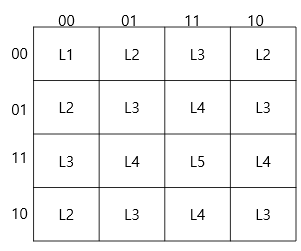
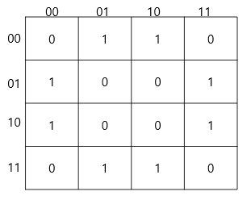
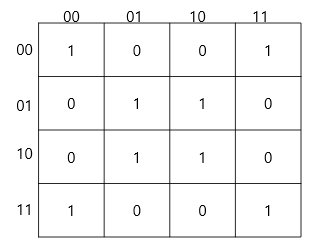
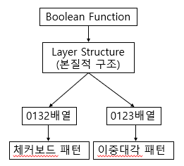
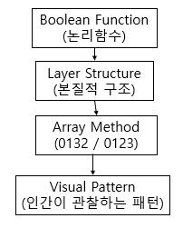

카르노맵의 시각적 패턴과 Boolean 공간 구조의 대응 관계 연구
4변수 완전대칭함수의 시각 패턴 분류와 Hamming Weight 층 구조를 이용한 해석
초록 / Abstract
카르노맵(Karnaugh Map)은 일반적으로 논리함수의 최소화를 위한 도구로 사용되며, 교육 현장에서도 SOP 및 POS 형태의 간소화 과정에 초점을 맞추어 설명되는 경우가 많다. 그러나 실제 카르노맵에는 체커보드 패턴, 이중대각 패턴, 고리 패턴 등 다양한 시각적 구조가 나타나며, 이러한 구조는 단순한 배열 결과가 아니라 Boolean 함수의 구조적 특성을 반영할 가능성이 있다.
본 연구에서는 4변수 카르노맵에 나타나는 완전대칭함수(Symmetric Boolean Function)의 시각 패턴을 분석하고, 이를 Hamming Weight 기반 Layer 구조의 관점에서 해석하였다. 특히 Exactly-$k$ 함수와 XOR/XNOR 함수를 대상으로 Gray Code 배열(0132)과 일반 이진 배열(0123)을 비교하여 시각 패턴과 구조적 특성의 관계를 분석하였다.
분석 결과, Exactly-0 및 Exactly-4 함수는 점 패턴(Point Pattern), Exactly-1 및 Exactly-3 함수는 모서리 패턴(Corner Pattern), Exactly-2 함수는 고리 패턴(Ring Pattern)을 형성하였다. 또한 XOR 및 XNOR 함수는 배열 방식에 따라 체커보드 패턴(Checkerboard Pattern) 또는 이중대각 패턴(Double-Diagonal Pattern)으로 표현되었다. 특히 XOR 체커보드는 홀수 Layer 선택 구조와 Gray Code 배열의 인접성 보존 성질이 결합되어 형성되는 현상으로 해석할 수 있음을 확인하였다.
📊 핵심 결과 요약 (Key Findings)
| 함수 | 선택 Layer | 시각 패턴 | 상태 수 |
|---|---|---|---|
| Exactly-0 | $L_0$ | 점 패턴 (Point) | 1 |
| Exactly-1 | $L_1$ | 모서리 패턴 (Corner) | 4 |
| Exactly-2 | $L_2$ | 고리 패턴 (Ring) | 6 |
| Exactly-3 | $L_3$ | 모서리 패턴 (Corner) | 4 |
| Exactly-4 | $L_4$ | 점 패턴 (Point) | 1 |
| XOR | $L_1 \cup L_3$ | 체커보드 (0132) / 이중대각 (0123) | 8 |
| XNOR | $L_0 \cup L_2 \cup L_4$ | 체커보드 (0132) / 이중대각 (0123) | 8 |
1. 서론
1.1 연구 배경
카르노맵은 디지털 논리회로 설계에서 논리식을 최소화하기 위한 대표적인 도구로 사용된다. 일반적인 교육 과정에서는 카르노맵의 인접 셀을 그룹화하여 SOP(Sum of Products) 또는 POS(Product of Sums) 형태의 최소 논리식을 도출하는 방법을 중심으로 설명한다.
그러나 실제 카르노맵을 관찰하면 단순한 그룹화 이상의 다양한 시각적 구조가 존재한다. 특히 XOR 및 XNOR 함수의 경우 일반적인 직사각형 그룹과는 다른 체커보드 형태의 패턴이 나타난다. 또한 배열 방식에 따라 동일한 논리함수가 체커보드, 대각선, 이중대각선 등 서로 다른 시각적 구조로 표현될 수 있다.
1.2 연구 목적
본 연구의 목적은 카르노맵에 나타나는 시각적 패턴을 체계적으로 분류하고, 이러한 패턴이 Boolean 함수의 구조와 어떠한 관계를 가지는지 탐구하는 데 있다.
Hamming Weight 관점을 도입하여 각 함수를 Boolean 공간의 Layer 구조로 해석하고, 카르노맵의 시각 패턴이 이러한 구조의 2차원 표현으로 이해될 수 있음을 규명하고자 한다.
1.3 연구 범위 및 방법
본 연구는 4변수 카르노맵(총 16개 입력 상태)을 대상으로 수행하였다. 완전대칭함수 중 Exactly-$k$ 함수와 XOR/XNOR 함수를 선정하고, Gray Code 배열(0132)과 일반 이진 배열(0123)을 교차 비교하여 시각적 대칭, 동일, 체커보드, 이중대각, 고리 패턴의 5대 분류 체계를 수립하였다.
2. 이론적 배경
2.1 카르노맵의 구조
4변수 카르노맵은 총 16개의 셀로 구성되며, 각 셀은 입력 변수 $A, B, C, D$의 하나의 상태에 대응한다. 인접한 상태가 하나의 변수만 다르도록 배치되어 Boolean 공간의 인접성을 보존한다.

2.2 Gray Code 배열과 일반 이진 배열
4변수 카르노맵의 행과 열은 일반적으로 Gray Code 순서인 00, 01, 11, 10으로 배열된다.
이 배열 방식은 인접 상태 사이의 Hamming Distance가 항상 1이 된다는 성질을 가진다 (0132 배열).
반면 일반적인 이진수 순서인 00, 01, 10, 11을 0123 배열이라 부른다.
동일한 함수라도 표현 방식에 따라 인접성이 교란되며 서로 다른 시각 패턴이 나타난다.
2.3 완전대칭함수와 Hamming Weight
변수의 순서와 무관하게 동일한 출력을 유지하는 함수를 완전대칭함수(Symmetric Boolean Function)라 한다. 입력 상태의 Hamming Weight $w$는 다음과 같이 정의된다:
$$w = A + B + C + D$$
여기서 $w \in \{0, 1, 2, 3, 4\}$의 다섯 가지 값이 가능하며, 각 $w$에 해당하는 상태의 수는 조합 공식 $\binom{4}{w}$이다.
2.4 Boolean 공간의 Layer 구조
4변수 공간 16개 상태는 Hamming Weight에 따라 파스칼 삼각형 계수와 동일한 $1\text{-}4\text{-}6\text{-}4\text{-}1$ 층(Layer) 구조를 이룬다.
| Layer | Weight ($w$) | 상태 수 $\binom{4}{w}$ | 해당 상태 |
|---|---|---|---|
| $L_0$ | 0 | 1 | 0000 |
| $L_1$ | 1 | 4 | 0001, 0010, 0100, 1000 |
| $L_2$ | 2 | 6 | 0011, 0101, 0110, 1001, 1010, 1100 |
| $L_3$ | 3 | 4 | 0111, 1011, 1101, 1110 |
| $L_4$ | 4 | 1 | 1111 |

2.5 Layer 구조와 시각 패턴의 인과 체계
완전대칭함수는 본질적으로 특정 Layer 또는 Layer 집합을 선택하는 함수이다.
3. 시각 패턴의 정의
3.1 시각적 대칭 (Visual Symmetry) & 시각적 동일 (Visual Repetition)
시각적 대칭은 특정 축에 대하여 카르노맵을 반사하였을 때 대응되는 위치의 값이 유지되는 성질이며, 시각적 동일은 특정 부분 블록이 평행이동을 통해 반복적으로 나타나는 현상이다.
3.2 체커보드 패턴 vs 이중대각 패턴
체커보드 패턴은 인접한 모든 셀의 값이 반대가 되는 구조이며, 이중대각 패턴은 주대각선($y=x$)과 부대각선($y=-x$) 대칭을 동시에 가지는 격자 형태이다.
0 1 0 1 1 0 1 0 0 1 0 1 1 0 1 0
0 1 1 0 1 0 0 1 1 0 0 1 0 1 1 0
3.3 고리 패턴 (Ring Pattern)
Exactly-2 함수는 중앙 영역을 감싸는 6개 셀의 연속적 띠를 형성하며 폐곡선 고리 형태로 인식된다.
4. 완전대칭함수의 시각 패턴 분석
4.1 Exactly-0 & Exactly-4 함수 — 점 패턴 (Point Pattern)
$L_0$ 및 $L_4$는 각각 1개 상태만을 가지며 카르노맵 모서리에 단일 점으로 나타난다.


4.2 Exactly-1 & Exactly-3 함수 — 모서리 패턴 (Corner Pattern)
$L_1$ 및 $L_3$은 각각 4개 상태를 가지며, 4변수 카르노맵의 사방 모서리 방향으로 분산 배치되는 구조적 쌍대성을 가진다.


4.3 Exactly-2 함수 — 고리 패턴 (Ring Pattern)
Boolean 공간의 최다 상태 Layer인 $L_2$ (6개 상태)는 Gray Code 위에서 닫힌 고리 형태의 기하학적 띠를 형성한다.

4.4 XOR & XNOR 함수 — 체커보드 vs 이중대각 비교
XOR은 홀수 Layer ($L_1 \cup L_3$, 8개 셀), XNOR은 짝수 Layer ($L_0 \cup L_2 \cup L_4$, 8개 셀)를 선택한다.




5. XOR/XNOR 패턴의 구조적 해석
5.1 패리티 구조와 인접 이동
4변수 XOR 함수는 $w$가 홀수인 상태의 합집합($L_1 \cup L_3$)이다. 카르노맵에서 한 셀 이동할 때 비트가 1개 바뀌므로 Hamming Weight는 반드시 $\pm 1$ 변화한다:
$$L_0 \longleftrightarrow L_1 \longleftrightarrow L_2 \longleftrightarrow L_3 \longleftrightarrow L_4$$
따라서 인접한 두 셀은 홀짝성이 반드시 반대이며, 홀수 Layer 선택 함수는 Gray Code 위에서 필연적으로 체커보드 패턴을 산출한다.

6. 배열 방식에 따른 시각 패턴 변화
6.1 패턴 형성의 이중 원인 모형
본 연구의 분석은 시각 패턴이 단일 원인이 아닌 **함수의 성질(Layer 구조)**과 **표현의 성질(배열 방식)**의 상호작용임을 입증한다.
| 결정 요소 | 결정 내용 | 성격 |
|---|---|---|
| Layer 구조 | 어떤 상태가 선택되는가 ($L_k$) | Boolean 함수의 내재적 불변성 |
| 배열 방식 | 선택된 상태들이 평면에서 어떤 형태로 나타나는가 (0132 vs 0123) | 인간 관찰 좌표계의 변환 |

7. 결론 및 탐색적 가설
"카르노맵의 주요 시각 패턴은 Boolean 공간의 Layer 구조가 특정 배열 방식 위에 투영된 결과이다."
본 연구는 점, 모서리, 고리, 체커보드 패턴이 개별적 우연이 아니라 파스칼 삼각형 Layer 구조와 인접성 보존 배열의 결합이라는 공통 원리로 통합 설명될 수 있음을 시사한다. 이를 통해 카르노맵은 단순한 회로 간소화 도구를 넘어 고차원 Boolean 공간 구조를 탐색하는 시각 인지 도구로 재해석된다.
참고문헌 (References)
- Karnaugh, M. (1953). "The Map Method for Synthesis of Combinational Logic Circuits." Transactions of the AIEE, 72(9), 593–599.
- Veitch, E. W. (1952). "A Chart Method for Simplifying Truth Functions." Proceedings of the ACM, 127–133.
- Gray, F. (1953). "Pulse Code Communication." U.S. Patent 2,632,058.
- Roth, C. H. Fundamentals of Logic Design. Cengage Learning.
- Mano, M. M. & Ciletti, M. D. Digital Design. Pearson.
- Hamming, R. W. (1950). "Error Detecting and Error Correcting Codes." Bell System Technical Journal, 29, 147–160.
- Wegener, I. (1987). The Complexity of Boolean Functions. John Wiley & Sons.
- Crama, Y. & Hammer, P. L. (2011). Boolean Functions: Theory, Algorithms, and Applications. Cambridge University Press.
- Stanley, R. P. Enumerative Combinatorics, Volume 1. Cambridge University Press.
- Knuth, D. E. The Art of Computer Programming, Volume 4A. Addison-Wesley.